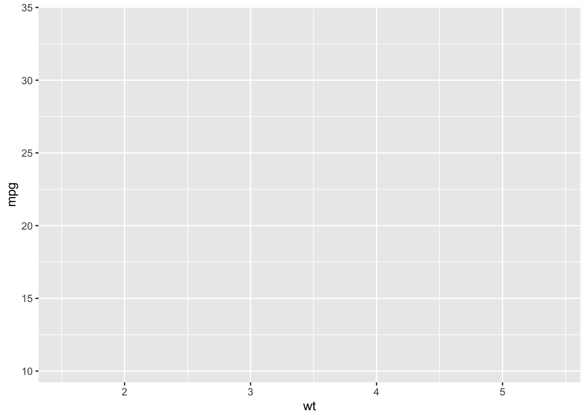
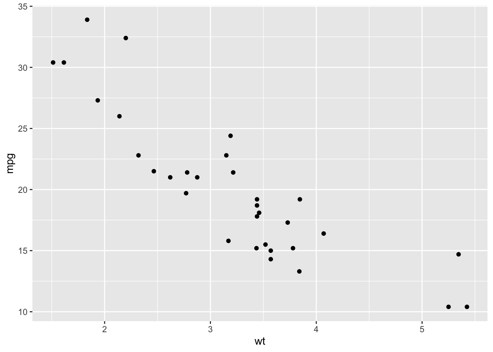
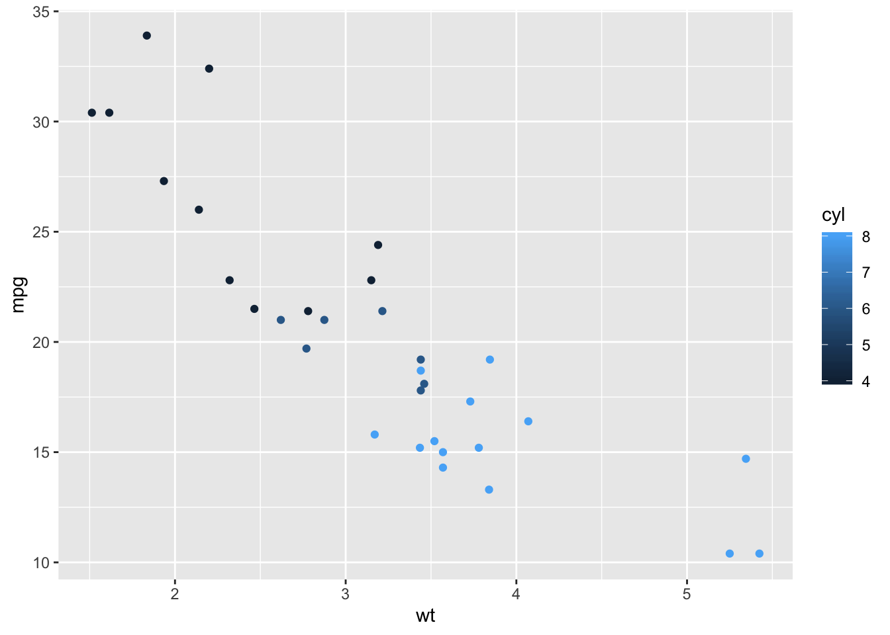
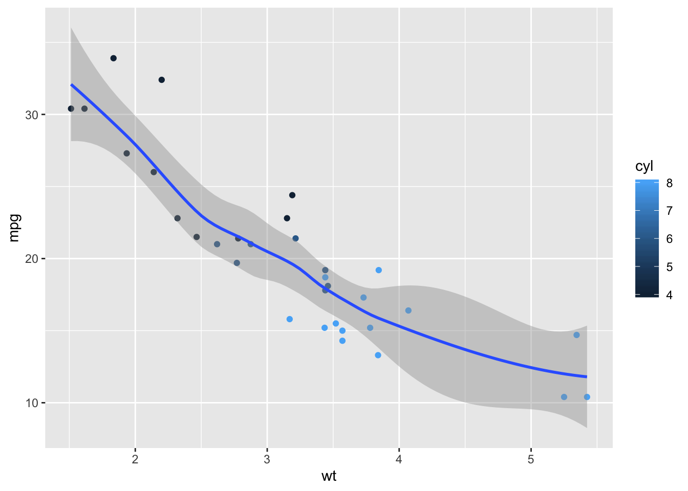
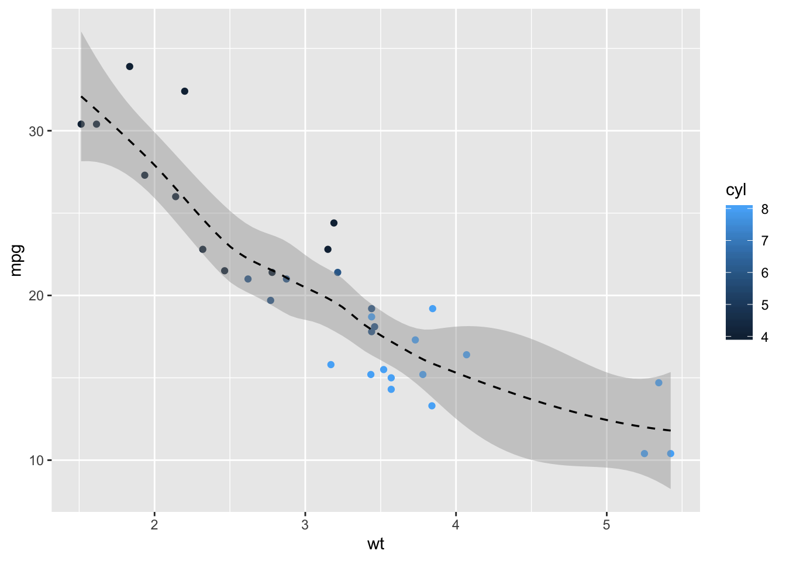
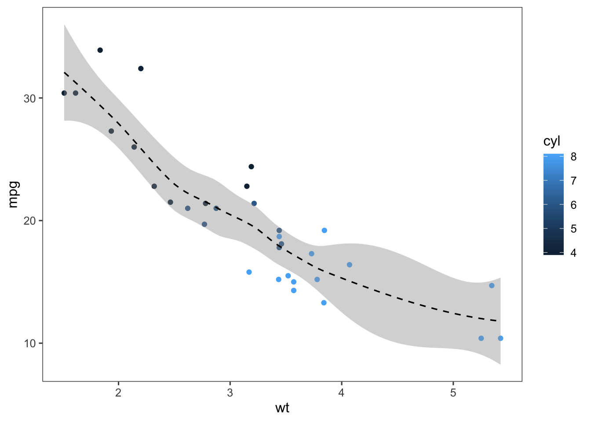
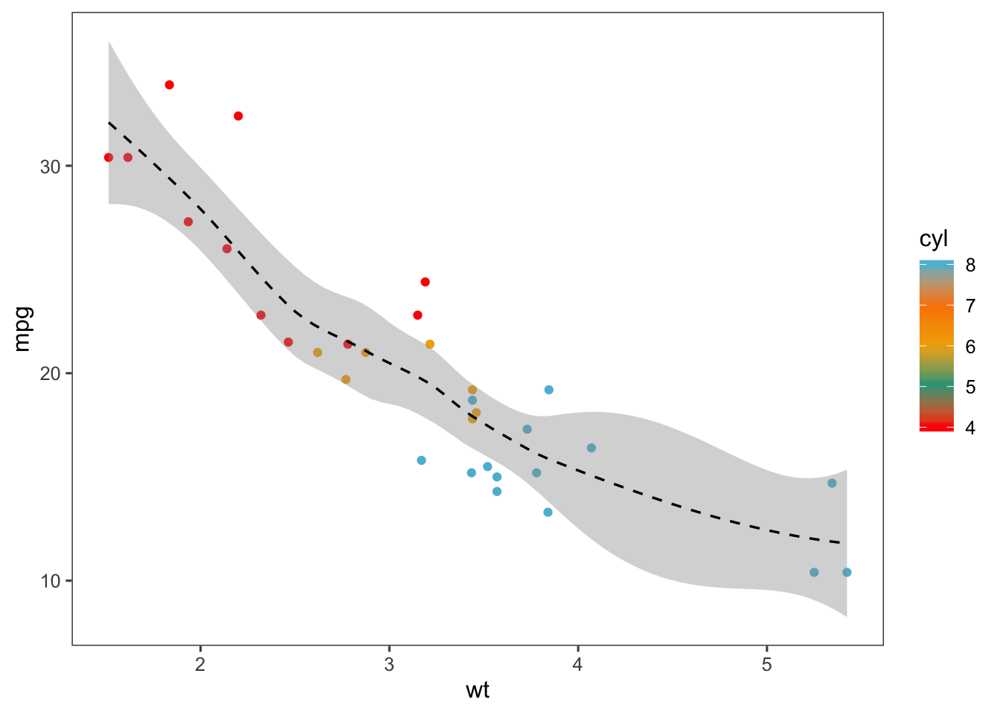
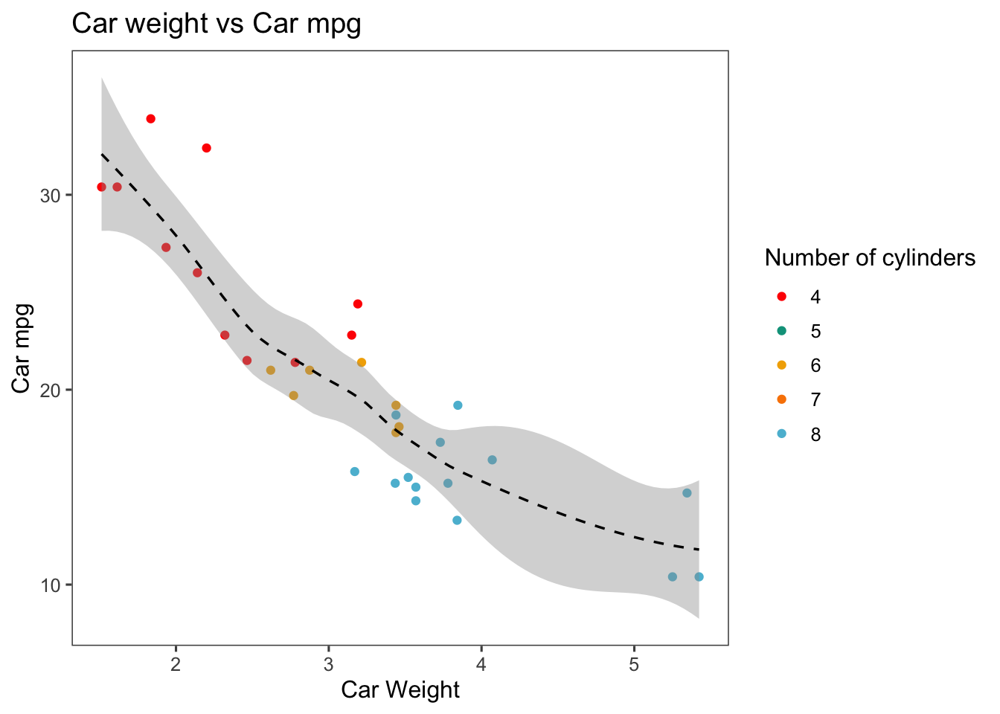
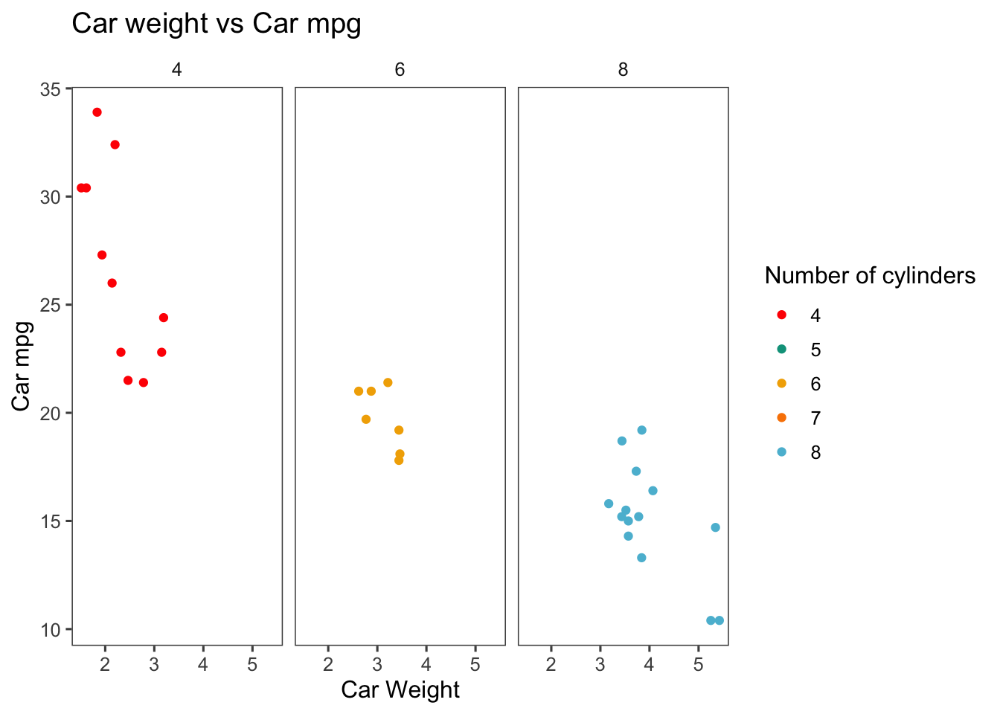

Blog
Making Beautiful Plots in R using ggplot2
Data visualization, one of the important steps in data science, is the graphical representation of information and data. The goal is to communicate information clearly and efficiently to users. In this post, I will talk about how to make some beautiful plots in R using the ggplot2 package.
library(ggplot2)
library(ggthemes)
library(wesanderson)
library(ggridges)##
## Attaching package: 'ggridges'## The following object is masked from 'package:ggplot2':
##
## scale_discrete_manualData
We will use the built-in dataset “mtcars” as an example. Firstly, let’s look at the data:
head(mtcars)## mpg cyl disp hp drat wt qsec vs am gear carb
## Mazda RX4 21.0 6 160 110 3.90 2.620 16.46 0 1 4 4
## Mazda RX4 Wag 21.0 6 160 110 3.90 2.875 17.02 0 1 4 4
## Datsun 710 22.8 4 108 93 3.85 2.320 18.61 1 1 4 1
## Hornet 4 Drive 21.4 6 258 110 3.08 3.215 19.44 1 0 3 1
## Hornet Sportabout 18.7 8 360 175 3.15 3.440 17.02 0 0 3 2
## Valiant 18.1 6 225 105 2.76 3.460 20.22 1 0 3 1ggplot: ggplot()
Then we start to make an empty plot with the data mtcars:
ggplot(data = mtcars)
Aethetics: aes()
We set the aethetics of the ggplot by using aes(). For example, we try the make a plot about the relationship between weight and mpg of cars.
ggplot(data = mtcars,
aes(x = wt, y = mpg))
Geometric object: geom_
We use geom_ to tell the plot how we want to display our data. In this example, we will use geom_point().
ggplot(data = mtcars,
aes(x = wt, y = mpg))+
geom_point()
Add more aethetics
People do not like black and white plots so that let’s show some color! In this case, let’s try different color based on the number of cylinders.
ggplot(data = mtcars,
aes(x = wt, y = mpg))+
geom_point(aes(color = cyl))
Add more geom_
We can add more than one geometric object to the plot using geom_. For this example, we add a smoothed conditional mean to the plot using geom_smooth().
ggplot(data = mtcars,
aes(x = wt, y = mpg))+
geom_point(aes(color = cyl))+
geom_smooth()## `geom_smooth()` using method = 'loess' and formula 'y ~ x'
Change the appearace of geom_smooth
We can modify the appearance of the line of smoothed conditional mean.
ggplot(data = mtcars,
aes(x = wt, y = mpg))+
geom_point(aes(color = cyl))+
geom_smooth(color = "black", size = 0.6, linetype = 2)## `geom_smooth()` using method = 'loess' and formula 'y ~ x'
Change the theme
To make the plot look better, we can modify the theme from the “ggthemes” package.
ggplot(data = mtcars,
aes(x = wt, y = mpg))+
geom_point(aes(color = cyl))+
geom_smooth(color = "black", size = 0.6, linetype = 2)+
theme_few()## `geom_smooth()` using method = 'loess' and formula 'y ~ x'
Use a better colot set
The default color of the points is so boring. Let’s try something fun!
ggplot(data = mtcars,
aes(x = wt, y = mpg))+
geom_point(aes(color = cyl))+
geom_smooth(color = "black", size = 0.6, linetype = 2)+
theme_few()+
scale_color_gradientn(colors = wes_palette("Darjeeling1"))## `geom_smooth()` using method = 'loess' and formula 'y ~ x'
Change labels and title
A good plot should contain information about x and y axis, the guide and also a title
ggplot(data = mtcars,
aes(x = wt, y = mpg))+
geom_point(aes(color = cyl))+
geom_smooth(color = "black", size = 0.6, linetype = 2)+
theme_few()+
scale_color_gradientn(colors = wes_palette("Darjeeling1"))+
xlab("Car Weight")+
ylab("Car mpg")+
ggtitle("Car weight vs Car mpg")+
guides(color=guide_legend(title="Number of cylinders"))## `geom_smooth()` using method = 'loess' and formula 'y ~ x'
Now our plot looks very beautiful:)
Facet
We can look in details by using facet()
ggplot(data = mtcars,
aes(x = wt, y = mpg))+
geom_point(aes(color = cyl))+
theme_few()+
scale_color_gradientn(colors = wes_palette("Darjeeling1"))+
xlab("Car Weight")+
ylab("Car mpg")+
ggtitle("Car weight vs Car mpg")+
guides(color=guide_legend(title="Number of cylinders"))+
facet_grid(~cyl)